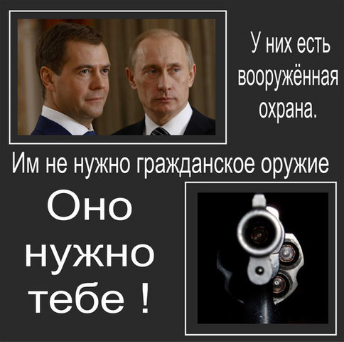

Warrax
Прогибиционизм: неумение мыслить, осложненное хоплофобией
Хоплофобия (гоплофобия) — (от др.-греч. ὅπλον — оружие и φόβος — страх), патологическая боязнь оружия. В более узком смысле означает позицию против того, чтобы граждане страны имели возможность приобретать и использовать оружие самообороны, обладающее эффективностью, а именно — короткоствольное. Также их называют прогибиционаистами (запретителями).
Я уже писал большую статью "Прогибиционисты и все-все-все", в которой разобрал стандартные статьи "против", а также обрисовал психологический портрет "запретителя".
В этой работе я еще раз разберу стандартные глюки, воспользовавшись широким обсуждением темы в ЖЖ. Я перечитал около 10000 комментов в нескольких темах, так что вам остается лишь прочесть отфильтрованное и сделать выводы самостоятельно (а свои выводы я буду делать по ходу дела). Если кто вдруг считает, что я специально не привел самые умные и неотразимые выводы прогибиционистов — ссылки "откуда все" я даю, проверяйте сами.
После этого разбора планируется сделать ЧаВО по этой теме, где будет все кратко, понятно, и по пунктам для удобства.
Мои комментарии, как и всегда, выделяются так, как этот абзац.
07/2011
Вместо вступления
http://naganoff.livejournal.com/28353.html
Ответы сторонников легализации короткоствольного оружия на контраргументы противников теряются среди тысяч комментариев и записей на эту тему на просторах Сети, в книгах и материалах круглых столов. До сих пор так и не появилось некоего универсального всеобъемлющего поста в ЖЖ, который смог бы вобрать в себя все контраргументы противников — и не оставить на них камня на камне. Предлагаю исправить это досадное упущение.
Уже ясна примитивная схема противодействия: когда кем-то в очередной раз поднимается тема легализации — её из раза в раз «замыливают» и сводят на нет тупыми возражениями, которые на моей памяти никогда не встречали мощного и концентрированного отпора в Сети, бьющего точно в цель. В итоге всё остаётся на своих местах. Сколько это может продолжаться?
Кто же против?
Немецкие «классики»:
Адольф Гитлер: «Глупейшей ошибкой было бы позволить завоеванным людям на Востоке владеть оружием».
Генрих Гиммлер: «Обычным гражданам оружие не нужно, поскольку владение им не служит целям государства».
Отечественные «классики»:
Владимир Путин: «Отрицательно, категорически против. … у нас нет такой традиции. Я глубоко убеждён, что свободное хождение огнестрельного оружия принесёт большой вред и представляет для нас большую опасность. …это не для нас…»;
Борис Грызлов: «Даже сама постановка вопроса о свободной продаже оружия в России преждевременна»;
 Рамзан Кадыров: «Я
— противник массовой продажи населению оружия. Какая разница, как называется
пистолет — травматическим или боевым, если из него могут убить человека».
Рамзан Кадыров: «Я
— противник массовой продажи населению оружия. Какая разница, как называется
пистолет — травматическим или боевым, если из него могут убить человека».
Павел Крашенинников (глава комитета Госдумы по законодательству, "Единая Россия"): «Мы можем себе представить, какой стала бы ситуация с бытовыми преступлениями, будь у граждан на руках оружие. Количество убийств и нанесений тяжких телесных повреждений увеличилось бы в разы. … Моя позиция, как и многих коллег, - категорически против»;
Владимир Васильев (Председатель комитета Государственной Думы по безопасности): «Населению нельзя разрешать ношение оружия…».
Позиция МВД РФ в целом была изложена пресс-секретарём Департамента охраны общественного порядка МВД Юлией Ивановой: «По этой проблеме у МВД позиция однозначная и жесткая — такую инициативу мы не поддерживаем. В нашей стране не существует культуры обращения граждан с оружием — естественно, граждан рядовых…»
Кроме того, против легализации оружия высказывались Олег Морозов (первый заместитель председателя Госдумы пятого созыва, член бюро Высшего совета партии "Единая Россия"); Владимир Плигин (комитет по конституционному законодательству Госдумы России, председатель); Михаил Гришанков ("Единая Россия", первый заместитель председателя комитета по безопасности ); Александр Гуров (депутат Госдумы, генерал-лейтенант милиции в отставке).
Что касается преступного мира, то никто из его представителей публично не высказывался по этому вопросу. Впрочем, бесспорно, что против легализации — все бандиты, грабители, насильники и убийцы.
Есть такая пословица: «Скажи мне кто твой друг – и я скажу, кто ты». Так что противникам легализации стоит задуматься, с кем они оказались в одной лодке.
Тем более что все эти персонажи либо находятся под вооружённой охраной, либо вооружены сами (или имеют возможность вооружиться). Простейший способ для получения оружия любым изъявившим на то желание представителем «элиты» — провести его как «наградное». Согласно Постановлению Правительства РФ от 05.12.2005 № 718 «О награждении оружием граждан РФ», в перечень особых заслуг, дающих право на получение именного пистолета, входят «достижения в области обеспечения законности, правопорядка, общественной безопасности, защиты прав и свобод человека и гражданина». Под эту размытую формулировку при желании может подпадать любой — были бы деньги да связи.
Поэтому неудивительно, когда против легализации выступают члены партии «Единая Россия» и высокопоставленные руководители МВД или ФСБ. Их логика ясна. Ясно, почему против и Рамзан Кадыров — в ЧР уже давно есть легальная возможность (в т.ч. и для амнистированных боевиков) получить оружие: числиться в территориальном подразделении любого из силовых ведомств (МВД, ФСБ и т.д.).
Удивительно и непонятно другое: когда с ними солидаризируются простые вроде бы граждане, с пеной у рта доказывающие, что у нас легализовать оружие ни в коем случае нельзя. Правда, надо уточнить: легализовать для граждан. Элите-то — можно, конечно, а вот быдлу — нельзя. А мы же — быдло, не так ли? Уж мы устроим бойню, как только доберёмся до пистолетов! Мы напьёмся и перестреляем друг друга! Вот молдаване и литовцы — это не быдло, поэтому им разрешено покупать оружие. Правда, в Молдавии потребление алкоголя на душу населения — 13,2 литра в год, а в Литве — 9,9 (в России — 10,3), и там почему-то не было бойни — но это же цивилизованные европейцы, а не быдло. И американцы — тоже не быдло, они имеют право на огнестрельное оружие для самообороны почти во всех штатах. А куда уж нам, убогим, до молдаван, литовцев и американцев? Зачем рабам оружие? Только элита должна иметь право на него — и уж мы-то это по-холопски обоснуем! Мы всем докажем, что мы — скот!
Такие доказательства и аргументы выглядят, помимо того что позорно, ещё и нелепо, и были уже многократно опровергнуты профессионалами. Чтобы виднее была вся полнота глупости аргументации противников ЛО, заменим слово «оружие» на «автомобиль» (по предложению logan_666). Получим следующее:
-
нельзя разрешать свободную продажу автомобилей, потому что в России одни пьяницы, и они будут на автомобилях по пьяни давить друг друга;
-
нельзя ..., потому что преступник может отобрать у вас автомобиль или угнать его и использовать в преступных целях;
-
нельзя ..., потому что в России нет культуры владения и управления автомобилями;
-
нельзя ..., потому что при московских пробках подготовленный человек без автомобиля (пешком) передвигается гораздо быстрее, чем на автомобиле;
-
нельзя ..., потому что управление автомобилем - это очень сложно, этому нужно много лет учиться;
-
нельзя ..., потому что преступники смогут легально закупить автомобилей и будут давить ими законопослушных граждан;
-
вообще, зачем вам автомобиль? Ходите лучше пешком. Да, на автомобиле быстрее, но ведь бывают ситуации, когда можно и пешком дойти. А поэтому пусть пешком ходят все и всегда.
Вот как-то так. Если кто с этим согласен — пусть первым сдаст свою машину в утиль.
Видимо, прав был Зигмунд Фрейд: «Страх оружия - есть признак неполного умственного и эмоционального развития».
Жалобно блеющие, мелко трясущиеся в ужасе животные, конечно, не воспримут доводов логики — но среди противников легализации есть и разумные, но добросовестно заблуждающиеся люди, которые сохранили способность более-менее трезво мыслить. Для них и будет предназначен нижеследующий разбор, который не оставит камня на камне от всей позорной запретительной аргументации.
Читайте в резюме моей ранней статьи преимущества КС для самообороны, преимущества КС экономические, а также — какую цель преследует недопущение короткоствольного оружия самообороны. Потом в ЧаВО повторю, а три раза повторять — смысла мало.
Еще несколько высказываний по теме:
«Самая главная причина для граждан владеть оружием и носить его, есть, в конечном счете, необходимость защищаться от тирании правительства» — Президент САСШ Томас Джефферсон.
«Людям различных провинций строго запрещается владеть мечами, короткими мечами, луками, копьями, огнестрельным оружием и другими видами оружия. Такое владение оружием затрудняет сбор налогов и пошлин и способствует зарождению восстаний» — Тойотоми Хидеоши (сегун, 1588).
«Статистика показывает, что из зарегистрированного оружия совершается в тысячи раз меньше преступлений, чем из незарегистрированного» — А.А.Бычковский, начальник Отдела по лицензионно-разрешительной работе Юго-Западного административного округа г. Москвы («МК» 21 ноября 2002 г).
«Забрать у меня оружие потому, что я могу кого-то застрелить — это все равно, что вырезать мне язык, потому что я могу закричать "Пожар" в переполненном театре» — Питер Венетоклис.
«Ни один раб не должен хранить или переносить оружие, если только у него нет письменного приказа хозяина или если он не находится в присутствии хозяина» — Билль о Рабах, Вирджиния, 1779.
«Законы, запрещающие ношение оружия, разоружают только тех, кто не намерен совершать преступление. Они помогают нападающим и вредят их жертвам; они способствуют, а не препятствуют преступлениям» — Чезаре Беккариа, итальянский юрист, XVIII век.
- Прощай, оружие! — претензия на аналитику (irvara)
- irvara: проекция по Фрейду, отращивание пиписьки / Андрей Круз: о спасении утопающих и о тех, кто ему мешает
- Техномад: Еще сомневаешься, зачем тебе оружие?
- Фриц Морген: Почему в России необходимо легализовать огнестрельное оружие
- Сборная солянка
- "Контраргументы" от irvara
- Еще один опрос от santagloria
- Из ЖЖ mpopenker
- К вопросу доступа к оружию преступников
- Легализация оружия поможет российской экономике
- А. Торшин, Самооборона: Уроки Сагры
- О гендерном отношении к войне
- lokamp: несколько мыслей на тему "оружие и граждане"
- Зачем нужно оружие: Уличные ограбления. Один из сценариев
- Жесть. Это уже за гранью
- Обыденность оружия
- Хоплофобский словарик
- Норвежская трагедия и контроль за оружием
- О прогибиционистах широкой руки
- Несколько ссылок
- Напоследок
- Приложение: путеводитель по книге А. Никонова

Интересно:
http://hyperprapor.livejournal.com/258179.html
«Нейроны и нейромедиаторы, такие как норэпинефрин, включают защитное состояние, когда мы чувствуем, что наши мысли необходимо защитить от влияния извне. Если чье-либо мнение отличается от нашего, в мозг поступают те же химические вещества, что обеспечивают наше выживание в опасных ситуациях.
В этом состоянии более примитивная часть мозга вмешивается в рациональное мышление. И лимбическая система (Врачи - к вам вопрос - я правильно перевел?) может вмешиваться в нашу рабочую память, ФИЗИЧЕСКИ вызывая "ограниченность мышления".
Независимо от ценности идеи - мозг в данном состоянии НЕ СПОСОБЕН ее обработать.
На нейронном уровне он воспринимает ее как угрозу, несмотря на то, что это может быть совершенно безобидное мнение или факты, с которыми он мог бы согласиться, размышляя рационально».
Это здорово объясняет, почему порой умные люди внезапно отключают мозг и долдонят одно и то же. Вообще - это касается многих дискуссий, но тут это особо заметно.
Интересно, да — и очень похоже на правду. Из работы Вилайануру Рамачандрани "Зеркальные нейроны. Отражение функций эволюции в моторике" для центров неинвазивной коррекции. Ramachandran VS, Rogers-Ramachandran D (April 1996). "Synaesthesia in phantom limbs induced with mirrors". Proc. Biol. Sci. 263 (1369): 377–86. doi:10.1098/rspb.1996.0058. PMID 8637922. Retrieved 2008-09-23.
Видео по теме (где-то в первой трети):